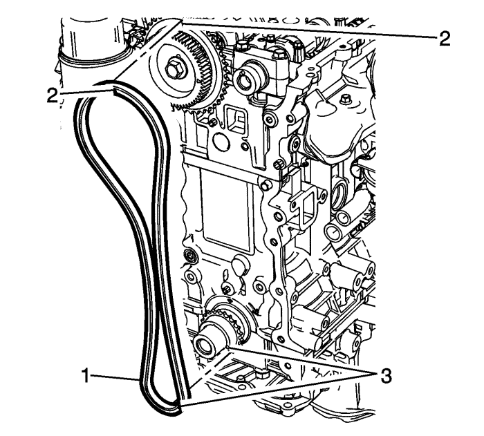
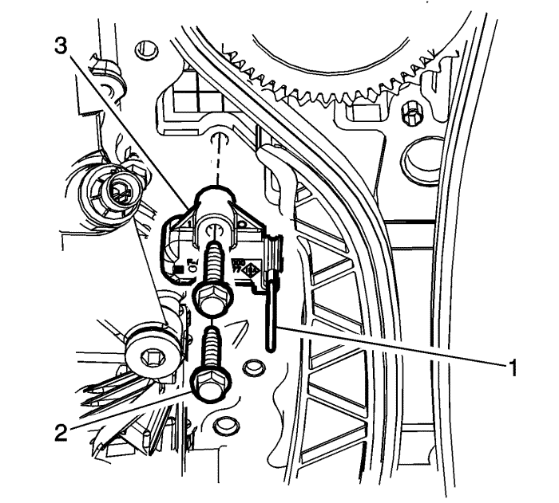
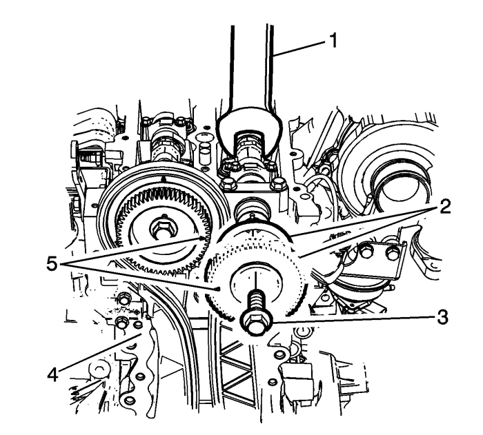

Nota: Asegúrese de que la llave del cigüeñal (2) está alineada con la marca de distribución del cigüeñal (3).
- Monte el piñón del cigüeñal (1) con la marca de la cadena de distribución en la posición de las 4 en punto.
Nota: Asegúrese de que el pasador del árbol de levas (4) se encuentra en la posición de las 12 en punto y que las marcas de distribución del piñón del árbol de levas están en la posición de las 12 y de las 3 en punto, tal y como se muestra.
- Monte una llave de extremo abierto (3) en las caras planas del árbol de levas para evitar que gire.
Precaución: Consulte Precaución con las fijaciones en la sección Prólogo
- Monte el piñón del árbol de levas de admisión (2) y el perno (1). Apriételo a 25 N·m (18,4 lib. pie).

Nota: Al montar la cadena de distribución, asegúrese de que las marcas del árbol de levas (2) y las marcas del cigüeñal (3) están alineadas.
- Monte la cadena de distribución (1) sobre los piñones del árbol de levas de admisión (2) y del cigüeñal (3), tal y como se muestra.
- Monte la zapata de la guía de la cadena de distribución (2).
- Coloque los pernos del patín de la guía de la cadena de distribución (1) y apriete hasta 25 N·m (18 lib. pie).
- Monte la zapata del dispositivo tensor de la cadena de distribución (2).
- Monte los tornillos del lado de la zapata del dispositivo tensor de la cadena de distribución (1) y apriételos a 25 N·m (18 lib. pie).

- Monte el tensor de la cadena de distribución (3).
- Monte los pernos del tensor de la cadena de distribución (2) y apriételos a 10 N·m (89 lib. pulg.).

Nota: Asegúrese de que las marcas de distribución (5) de los piñones de admisión y escape están alineadas al instalar el piñón del árbol de levas de escape.
- Monte el piñón y la arandela de empuje del árbol de levas de escape (2).
- Monte una llave de extremo abierto (1) en las caras planas del árbol de levas para evitar que gire.
- Monte el tornillo del piñón del árbol de levas de escape (3) y apriételos hasta 8 N·m (71 lib. pulg.)
- Desmonte el pasador EN-955-1 (4).
- Monte la tapa delantera del motor. Consultar Sustitución de la tapa de los árboles de levas .
- Monte la tapa del árbol de levas. Consultar Sustitución de la cubierta delantera del motor .